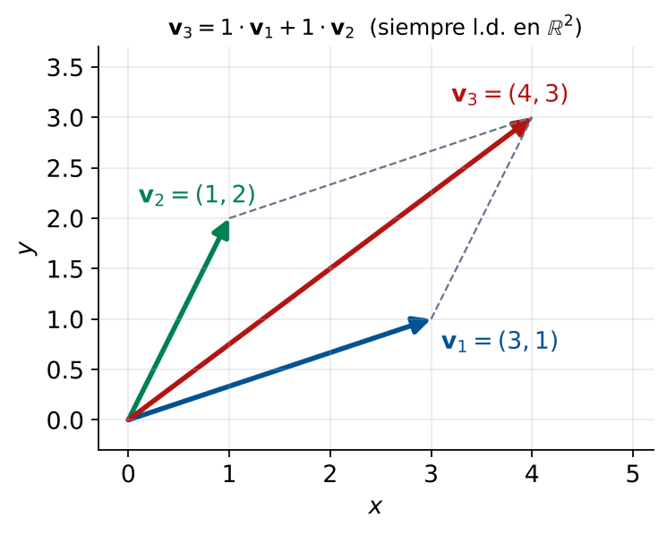

Combinación Lineal
Dependencia e Independencia Lineal
Matemáticas 2 — Módulo 4, Clase 17
Cátedra de Matemáticas 2
Ingeniería en Logística
Clase 17
Contenido de la sesión
- Apertura del Módulo 4
- Objetivos de aprendizaje
- Combinación lineal (Definición y ejemplos)
- El conjunto generado
- Dependencia e independencia lineal
- Criterio del rango y casos especiales
- Interpretación logística de la dependencia
- Verificación sistemática
- Práctica MATLAB
- Ejercicios prácticos
- Resumen y tarea
Apertura del Módulo 4 — Espacios Vectoriales
M1
Matrices
M2
Sistemas
M3
Vectores
M4
Espacios
M5
Regresión
M6-7
Normas/Redes
Módulo 4: Clases 17–20
- C17 (hoy): Combinación lineal. Dependencia e independencia lineal.
- C18: Espacios vectoriales. Subespacios.
- C19: Base y dimensión. Reducción de variables logísticas.
- C20: Mini-caso 3: Reducción de Variables Logísticas.
Conexión con lo visto
La independencia lineal ya apareció en el curso: rutas redundantes (\(\operatorname{rang}(A)<n\), columnas dependientes), lazos cerrados. Hoy lo formalizamos.
Objetivos de aprendizaje
Al finalizar esta clase el estudiante será capaz de:
- Definir combinación lineal de vectores y calcularla.
- Determinar si un vector es combinación lineal de un conjunto dado resolviendo un sistema.
- Definir y verificar la dependencia e independencia lineal.
- Relacionar la independencia lineal con el rango de la matriz.
- Interpretar la dependencia lineal en logística: rutas redundantes, perfiles solapados.
- Decidir si un conjunto de rutas es redundante usando MATLAB.
Combinación lineal — definición
Definición
Un vector \(\mathbf{y}\in\mathbb{R}^m\) es combinación lineal de \(\mathbf{v}_1,\ldots,\mathbf{v}_k\) si existen escalares \(c_i\) tales que:
\[ \mathbf{y} = c_1\mathbf{v}_1 + \cdots + c_k\mathbf{v}_k \]
Ejemplo logístico
Perfil de demanda de tres fábricas:
\[ \mathbf{f}_1=\begin{pmatrix}300\\200\\100\end{pmatrix},\; \mathbf{f}_2=\begin{pmatrix}150\\300\\50\end{pmatrix},\; \mathbf{f}_3=\begin{pmatrix}750\\700\\250\end{pmatrix} \]
¿Es \(\mathbf{f}_3\) combinación lineal de \(\mathbf{f}_1\) y \(\mathbf{f}_2\)?
Solución: \(c_1=2\), \(c_2=1\). ✓
Interpretación
\(\mathbf{f}_3 = 2\mathbf{f}_1 + \mathbf{f}_2\). F3 no agrega información nueva; su plan se deriva de F1 y F2.
Conexión con \(A\mathbf{x}=\mathbf{b}\)
"\(\mathbf{y}\) es c.l. de las columnas de \(A\)" \(\Leftrightarrow\) el sistema \(A\mathbf{c}=\mathbf{y}\) es compatible.
El conjunto generado
Definición
El conjunto generado por \(\{\mathbf{v}_1,\ldots,\mathbf{v}_k\}\) es el conjunto de todas las combinaciones lineales posibles:
\[ \operatorname{Gen}\{\mathbf{v}_1,\ldots,\mathbf{v}_k\} = \{c_1\mathbf{v}_1+\cdots+c_k\mathbf{v}_k\} \]
Ejemplos geométricos
- \(\operatorname{Gen}\{\mathbf{v}\}\): la recta que pasa por el origen.
- \(\operatorname{Gen}\{\mathbf{v}_1,\mathbf{v}_2\}\) (l.i.): el plano que pasa por el origen.
- \(\operatorname{Gen}\{\mathbf{v}_1,\mathbf{v}_2\}\) (dep.): misma recta (si son paralelos).
En logística
Si los perfiles \(\mathbf{f}_1,\mathbf{f}_2\) generan un plano, cualquier demanda en ese plano se satisface con combinaciones de F1 y F2.
Importante: Si la demanda de un nuevo cliente cae fuera del plano, se necesitan fuentes adicionales.
Dependencia lineal
Definición
El conjunto \(\{\mathbf{v}_1,\ldots,\mathbf{v}_k\}\) es linealmente dependiente (l.d.) si existen \(c_i\) no todos cero tales que:
\[ c_1\mathbf{v}_1 + \cdots + c_k\mathbf{v}_k = \mathbf{0} \]
Equivalencia
Es l.d. \(\Leftrightarrow\) al menos un vector es combinación lineal de los demás.
Independiente lineal (l.i.)
La única solución de \(c_1\mathbf{v}_1 + \cdots + c_k\mathbf{v}_k = \mathbf{0}\) es la trivial: \(c_1=\dots=c_k=0\).
Verificación práctica
Formar \(A=[\mathbf{v}_1\;\cdots\;\mathbf{v}_k]\) y resolver \(A\mathbf{c}=\mathbf{0}\):
- Solo solución trivial \(\Rightarrow\) l.i. (\(\operatorname{rang}(A)=k\))
- Soluciones no triviales \(\Rightarrow\) l.d. (\(\operatorname{rang}(A)<k\))
Criterio del rango y casos especiales
Teorema
Columnas de \(A\) son linealmente independientes \(\iff\) \(\operatorname{rang}(A) = k\) (rango máximo).
Casos especiales
- Si \(k>m\): siempre l.d.
- Si \(\mathbf{v}_i=\mathbf{0}\): siempre l.d.
- Si \(\mathbf{v}_i=c\mathbf{v}_j\): siempre l.d.
- Dos vectores: l.d. \(\iff\) uno es múltiplo del otro.
3 vectores en \(\mathbb{R}^2\)
Siempre l.d. (\(k=3>m=2\)).

Con 3 vectores en \(\mathbb{R}^2\), uno siempre es combinación de los otros dos.
Dependencia lineal en logística
Tres interpretaciones clave
- Columnas de \(A\) (rutas): Columnas l.d. \(\Rightarrow\) rutas redundantes. Agregar esa ruta no amplía las demandas alcanzables.
- Vectores de demanda (fábricas): Vectores l.d. \(\Rightarrow\) patrones de demanda solapados. No requiere capacidad logística adicional.
- Vectores del espacio nulo (lazos): Siempre son l.i. entre sí (base de subespacio).
Ejemplo: rutas redundantes
Red donde la ruta P3 es combinación de P1 y P2: \(\mathbf{a}_3 = 0.5\mathbf{a}_1 + 0.5\mathbf{a}_2\).
Agregar P3 no cambia el \(\operatorname{Gen}\{\mathbf{a}_1,\mathbf{a}_2\}\). Se pueden satisfacer las mismas demandas con o sin P3.
Nota: P3 puede ser útil si tiene menor costo o mayor capacidad que P1 y P2.
Dependencia lineal: verificación
Procedimiento
Dado \(\{\mathbf{v}_1,\ldots,\mathbf{v}_k\}\), formar \(A=[\mathbf{v}_1|\cdots|\mathbf{v}_k]\):
- Calcular \(\operatorname{rang}(A)\).
- Si \(\operatorname{rang}(A)=k\): l.i.
- Si \(\operatorname{rang}(A)<k\): l.d. Resolver \(A\mathbf{c}=\mathbf{0}\) para hallar la relación.
Ejemplo completo
\[ \mathbf{v}_1=\begin{pmatrix}1\\2\\1\end{pmatrix}, \mathbf{v}_2=\begin{pmatrix}2\\3\\1\end{pmatrix}, \mathbf{v}_3=\begin{pmatrix}4\\7\\3\end{pmatrix} \]
RREF de \(A\): \(\begin{pmatrix}1&0&2\\0&1&1\\0&0&0\end{pmatrix} \implies \operatorname{rang}(A)=2 < 3\). l.d.
Relación: \(\mathbf{v}_3=2\mathbf{v}_1+\mathbf{v}_2\).
MATLAB — independencia lineal
% Vectores de demanda de 3 fabricas
f1 = [300; 200; 100];
f2 = [150; 300; 50];
f3 = [750; 700; 250]; % 2*f1 + 1*f2
% Formar la matriz y calcular el rango
A = [f1, f2, f3];
r = rank(A); k = size(A, 2);
if r == k
disp('INDEPENDIENTES');
else
disp('DEPENDIENTES');
end
% Encontrar la relacion de dependencia
N = null(A, 'r');
disp(N);
Salida esperada
rang(A) = 2, k = 3
DEPENDIENTES
Relación (Nul(A)):
-2.0000
-1.0000
1.0000
Interpretación
La relación \(-2\mathbf{f}_1 - \mathbf{f}_2 + \mathbf{f}_3 = \mathbf{0}\) implica \(\mathbf{f}_3 = 2\mathbf{f}_1 + \mathbf{f}_2\).
Ejercicio 1 — Verificar dependencia
Enunciado: Determinar si son l.i. o l.d.
\[ \mathbf{u}_1=\begin{pmatrix}1\\0\\2\end{pmatrix},\; \mathbf{u}_2=\begin{pmatrix}2\\1\\3\end{pmatrix},\; \mathbf{u}_3=\begin{pmatrix}0\\-1\\1\end{pmatrix} \]
Resolución
\(A=[\mathbf{u}_1|\mathbf{u}_2|\mathbf{u}_3]\). RREF: \(\begin{pmatrix}1&0&2\\0&1&-1\\0&0&0\end{pmatrix}\).
\(\operatorname{rang}(A)=2 < 3 \implies\) l.d.
Del Nul(A) (\(c_3=1\Rightarrow c_1=-2,\ c_2=1\)): \(-2\mathbf{u}_1+\mathbf{u}_2+\mathbf{u}_3=\mathbf{0}\).
Relación: \(\mathbf{u}_3=2\mathbf{u}_1-\mathbf{u}_2\). Verificación: \(2(1,0,2)-(2,1,3)=(0,-1,1)\) ✓
Ejercicio 2 — Rutas redundantes
Enunciado: Perfiles de 4 plantas:
\(\mathbf{a}_1=(0.5,0.3,0.2)^T, \mathbf{a}_2=(0.2,0.5,0.3)^T, \mathbf{a}_3=(0.1,0.1,0.8)^T, \mathbf{a}_4=(0.7,0.8,0.5)^T\).
Resolución con MATLAB
A = [a1,a2,a3,a4]; rank(A) = 3 < 4.
Hay 1 ruta redundante. P4 es combinación de P1, P2, P3.
Resolviendo \([\mathbf{a}_1|\mathbf{a}_2|\mathbf{a}_3]\mathbf{c}=\mathbf{a}_4\): \(c_1=1,\ c_2=1,\ c_3=0\), es decir \(\mathbf{a}_4 = \mathbf{a}_1 + \mathbf{a}_2\). Verificación: \((0.5+0.2,\ 0.3+0.5,\ 0.2+0.3)=(0.7,0.8,0.5)\) ✓
Decisión: Si P4 es más cara que esa combinación, se puede eliminar.
Ejercicio 3 — Demanda alcanzable
Enunciado: Red con \(\mathbf{a}_1=(0.6,0.4)^T, \mathbf{a}_2=(0.3,0.7)^T\). Pedidos: \(\mathbf{d}_1=(480,320)^T\), \(\mathbf{d}_2=(150,350)^T\), \(\mathbf{d}_3=(300,400)^T\). ¿Son alcanzables?
Resolución
Calculamos \(\det(A)\) o Rango.
\(\det(A)=0.6(0.7)-0.4(0.3)=0.30 \neq 0\).
Conclusión: \(A\) es invertible. Todo vector en \(\mathbb{R}^2\) es alcanzable.
Los 3 pedidos son alcanzables. (En \(\mathbb{R}^2\), 2 vectores l.i. generan todo el plano).
Planes \(\mathbf{c}=A^{-1}\mathbf{d}\): \(\mathbf{c}_1=(800,0)^T\), \(\mathbf{c}_2=(0,500)^T\), \(\mathbf{c}_3=(300,400)^T\). Todos \(\geq 0\): factibles.
Resumen — Combinación lineal e independencia
Lo aprendido hoy
- Comb. lineal: \(\mathbf{y}=\sum c_i\mathbf{v}_i\). Verificar resolviendo sistema.
- Conjunto generado: todas las comb. lineales posibles.
- L.D.: existe \(\mathbf{c}\neq\mathbf{0}\) con \(A\mathbf{c}=\mathbf{0}\). \(\iff \operatorname{rang}(A)<k\).
- L.I.: solo \(\mathbf{c}=\mathbf{0}\) satisface. \(\iff \operatorname{rang}(A)=k\).
- Aplicación: columnas l.d. en \(A\) = rutas redundantes.
Conexión Clase 18
Un subespacio es el conjunto generado por un conjunto l.i. La dimensión es el número de vectores l.i.
Fórmulas clave
L.I. \(\iff \operatorname{rang}([\mathbf{v}_1|\cdots|\mathbf{v}_k])=k\)
L.D. \(\iff \operatorname{rang}([\mathbf{v}_1|\cdots|\mathbf{v}_k])<k\)
Tarea para la Clase 18
Actividades preparatorias
- Lectura: Lay, Sec. 2.8: Subspaces of \(\mathbb{R}^n\).
- Ejercicios: B1–B5 e I1–I3 de la guía Clase 17.
- MATLAB: Ejecutar
clase17_datos.m.
Para reflexionar
El espacio nulo es el conjunto de lazos cerrados. Sabemos que la base del espacio nulo es l.i. ¿Qué propiedad tiene este conjunto respecto a la capacidad de generar todos los lazos posibles?
¡Hasta la próxima clase!
Clase 18: Espacios Vectoriales y Subespacios
contacto@mat2logistica.edu